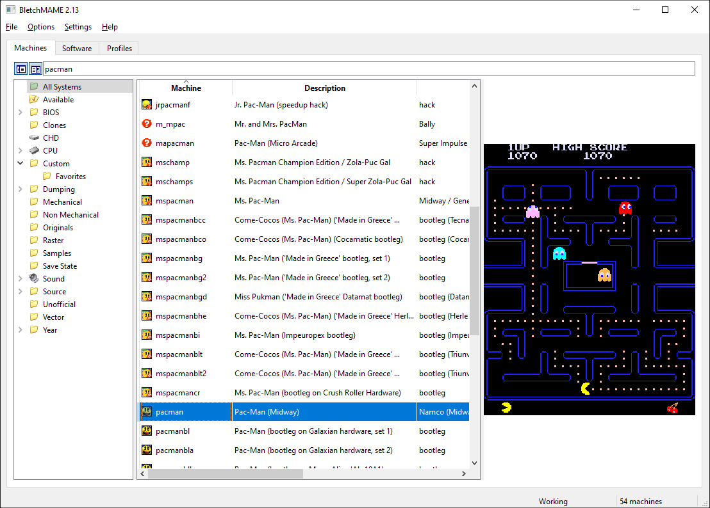
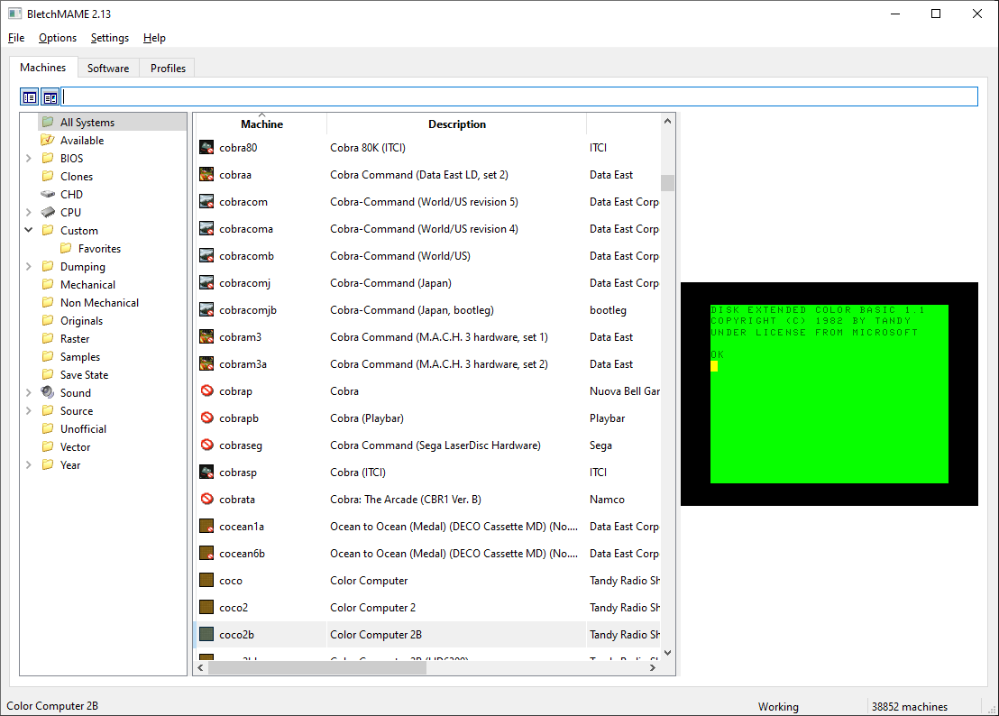
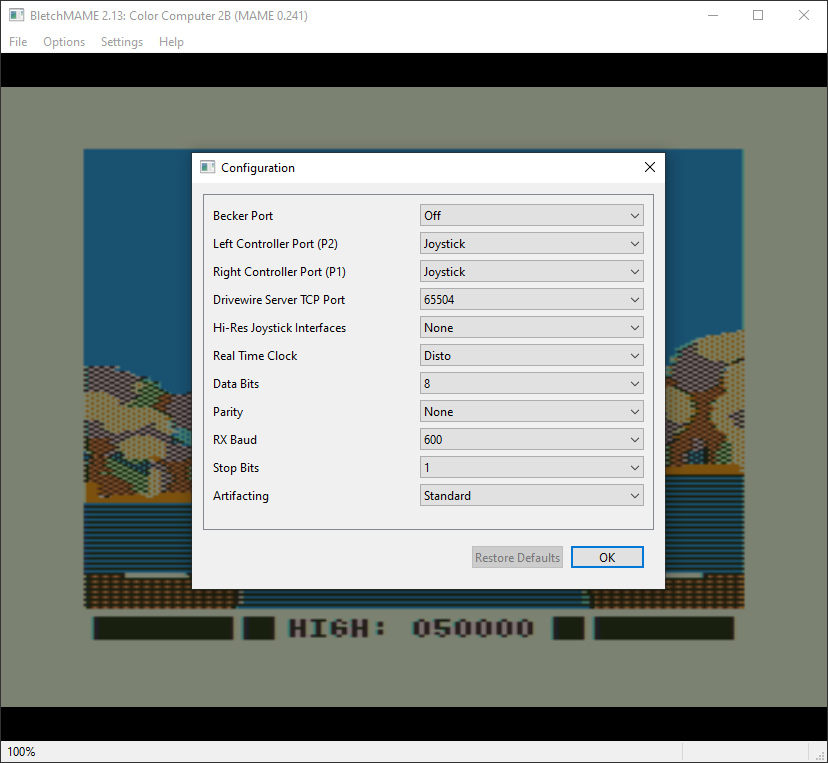
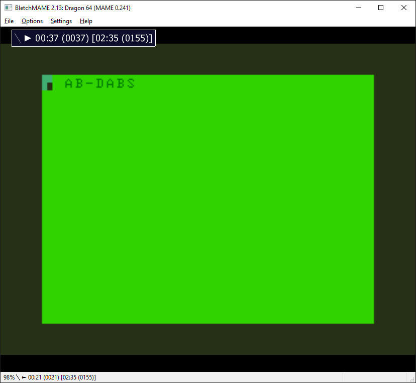
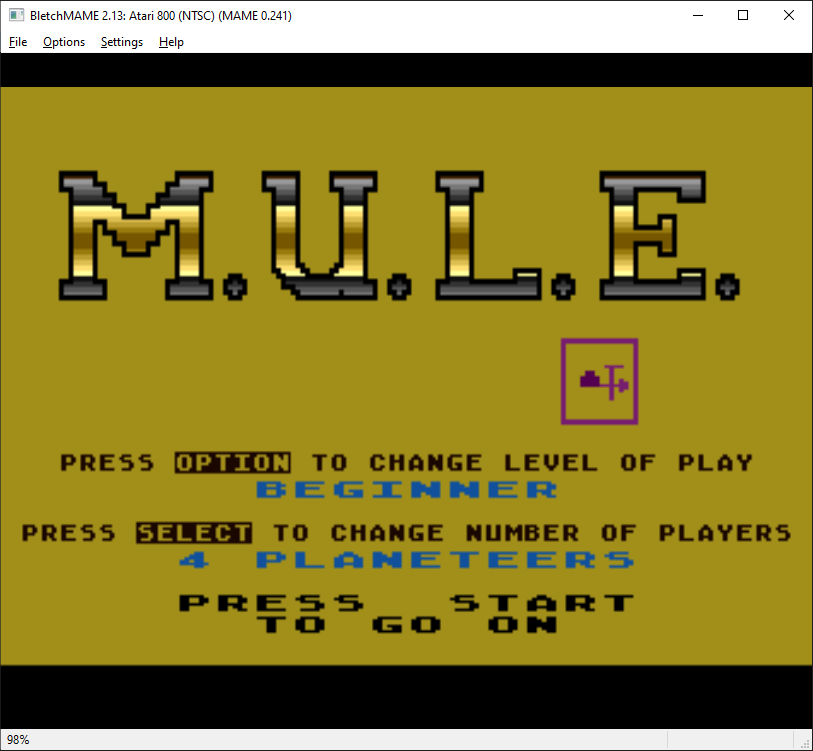
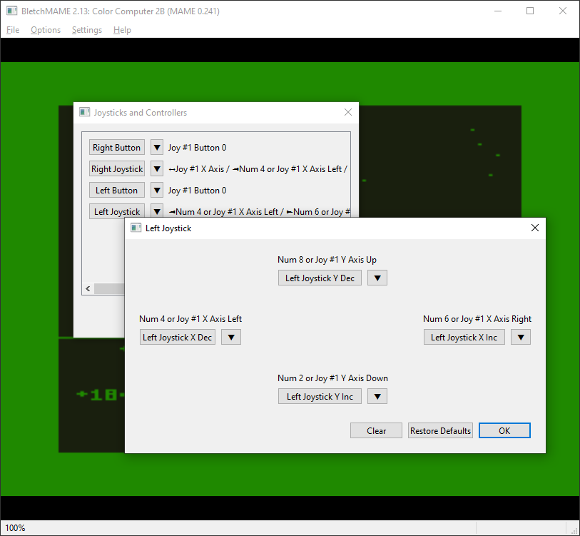
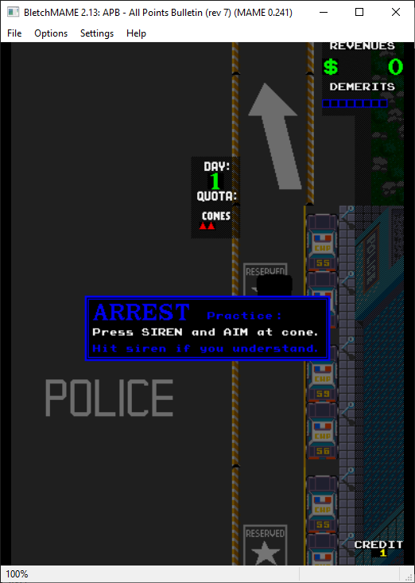
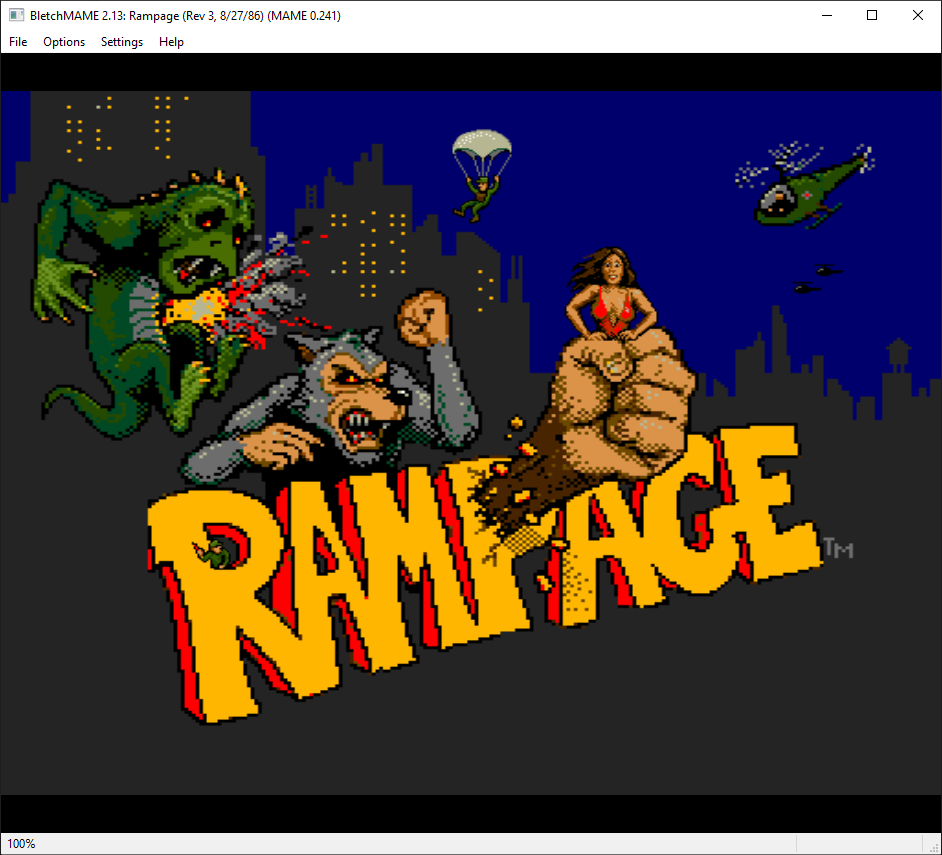

{kind=link}
{kind=link}


BletchMAME is a new experimental front end for MAME. Unlike existing front ends (which function as launchers, keeping MAME's internal UI), BletchMAME replaces the internal MAME UI with a more conventional point and click GUI to provide a friendlier experience in a number of areas (such as profiles, input configuration and a number of others). While BletchMAME is intended to support all machines supported by MAME, it should be particularly suitable to computer emulation.
The current BletchMAME is version 1.5, and requires MAME 0.213 or later.
|  |  | |
|
|
|  |  |  |
 |
 |
 |
 |  |  |  |
BletchMAME is distributed as an installer for the BletchMAME executable, along with a MAME LUA plugin that facilitates interactions with the front end. Currently, we only provide BletchMAME releases for 64-bit Windows, even though it should be portable to non-Windows platforms. (Any takers here?)
BletchMAME is licensed under the GNU GPL.
| Version | Date | MSI | ZIP | Summary |
| 1.5 | 2019-Nov-10 | BletchMAME_1_5.msi | BletchMAME_1_5.zip | Support for MAMEUI-style icon packs |
| 1.4 | 2019-Nov-3 | BletchMAME_1_4.msi | BletchMAME_1_4.zip | Full software list support |
| 1.3 | 2019-Oct-9 | BletchMAME_1_3.msi | BletchMAME_1_3.zip | Basic software list support |
| 1.2 | 2019-Sep-18 | BletchMAME_1_2.msi | BletchMAME_1_2.zip | Bug fixes |
| 1.1 | 2019-Sep-8 | BletchMAME_1_1.msi | Bug fixes | |
| 1.0 | 2019-Sep-7 | BletchMAME_1_0.msi | Initial release |
The BletchMAME sources are hosted on GitHub here.

{kind=link}
{kind=link}
{kind=link}
{kind=link}
{kind=link}
{kind=link}